Day 14
Thu, Nov 5
Palit · The slide deck
The deck for Saturday's presentation, built in code on one system.
Every size, gap and position on a slide comes from one sheet of rules, at 1920 by 1080. Sixteen of its slides, as they stand today.
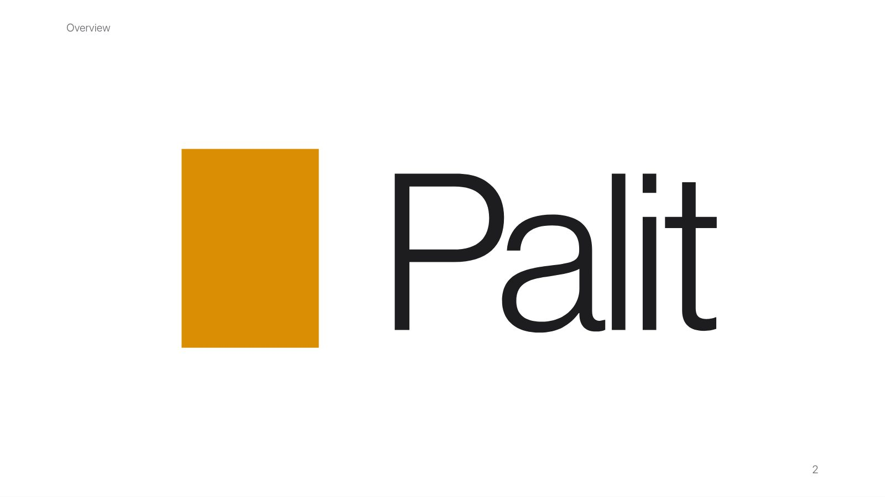
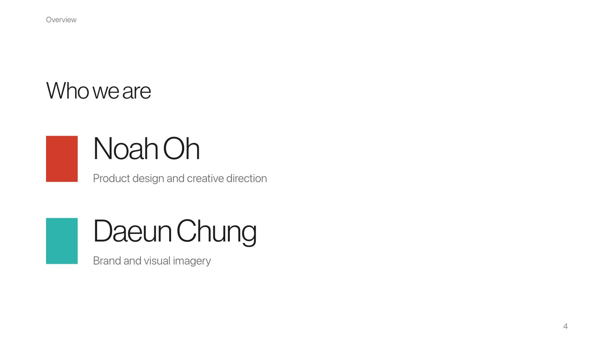
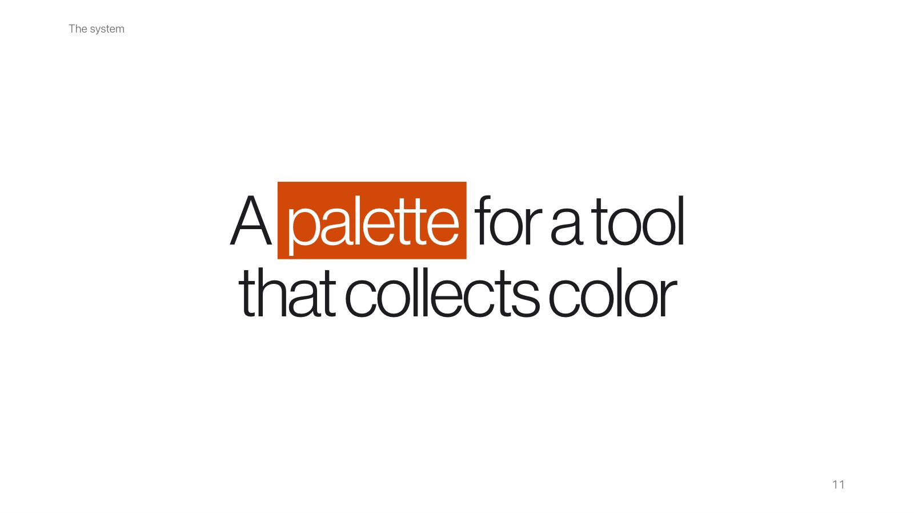
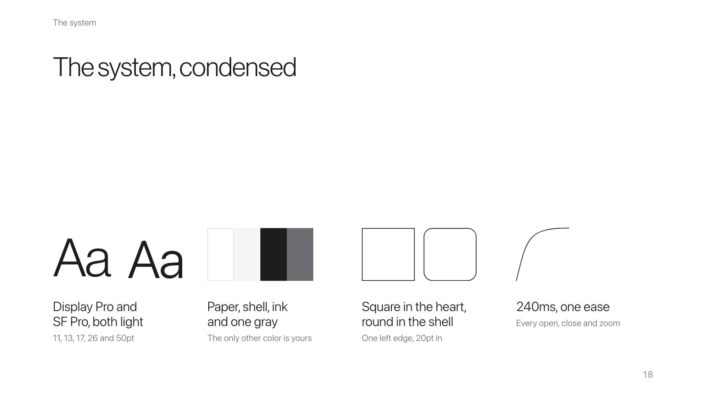
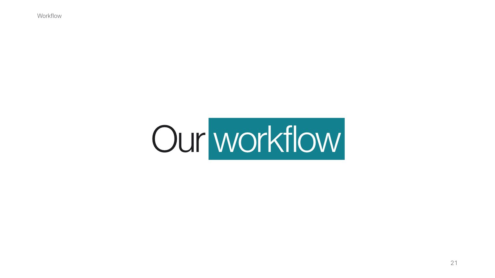
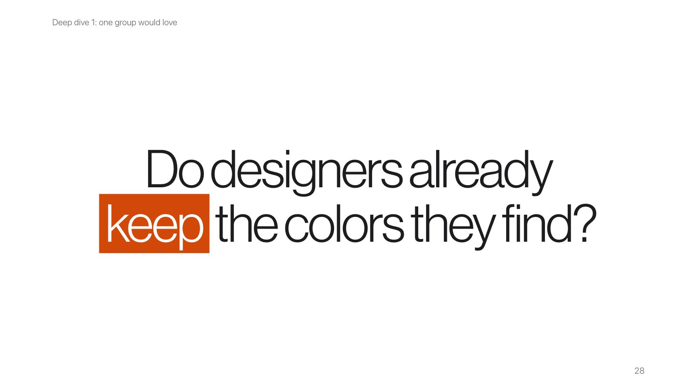
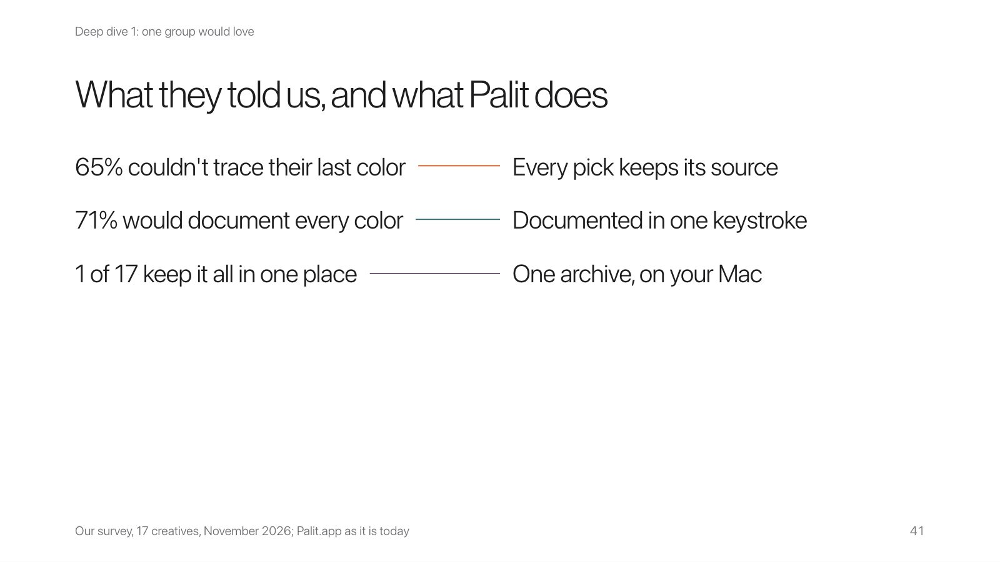
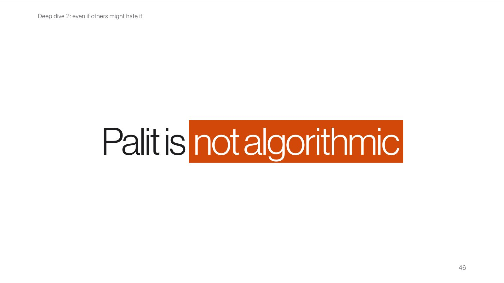
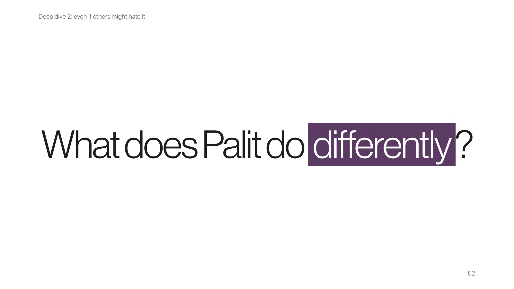
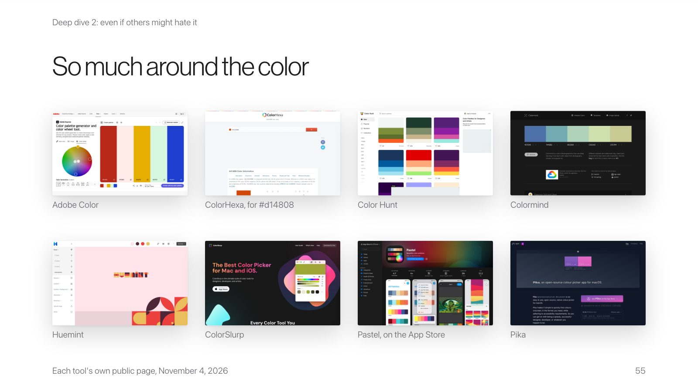
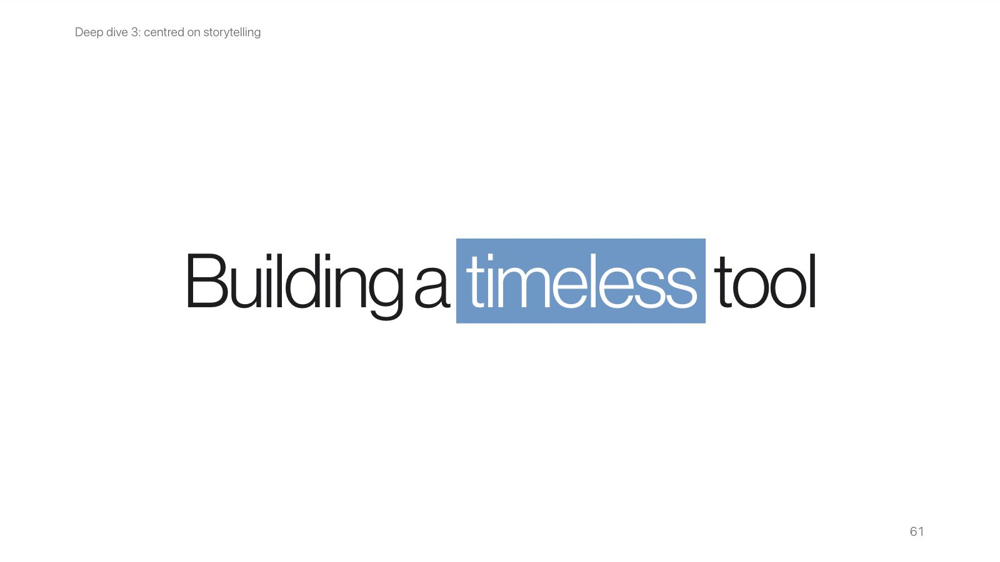
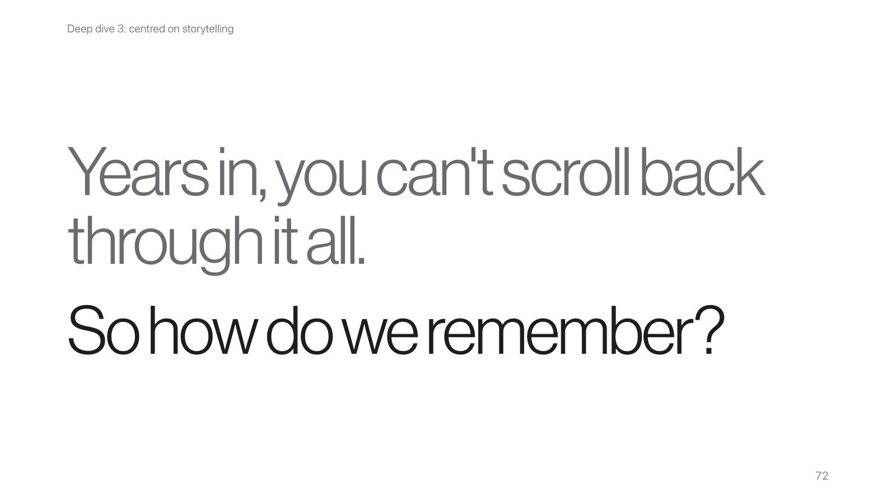
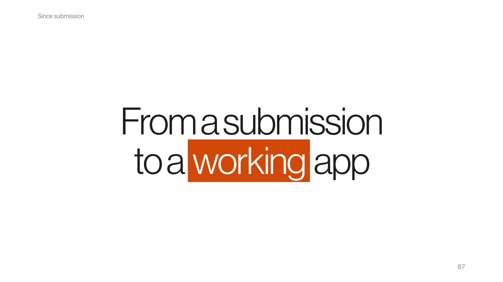
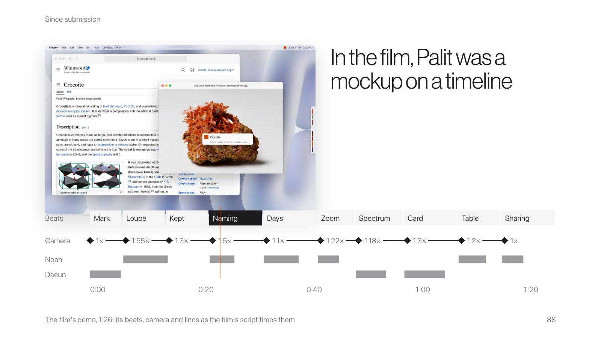